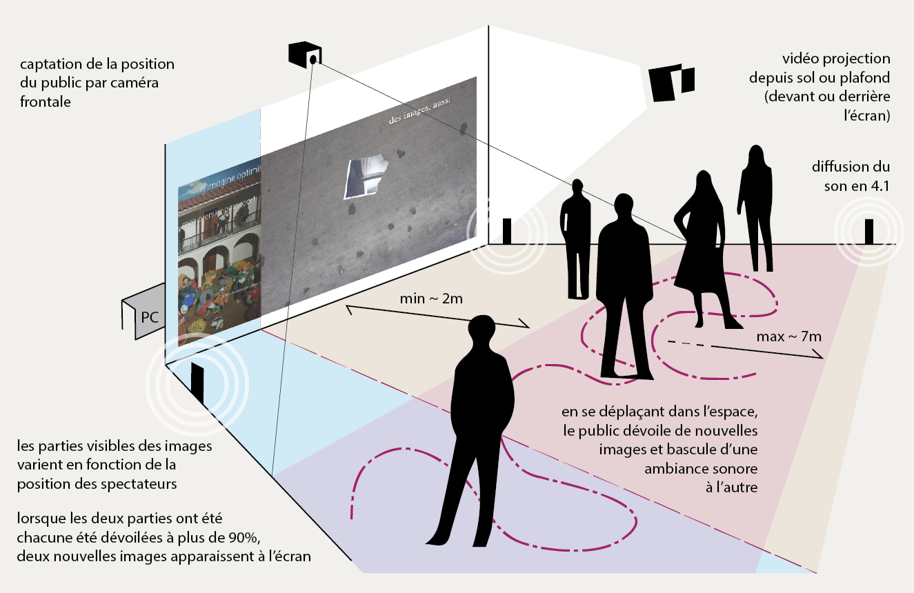
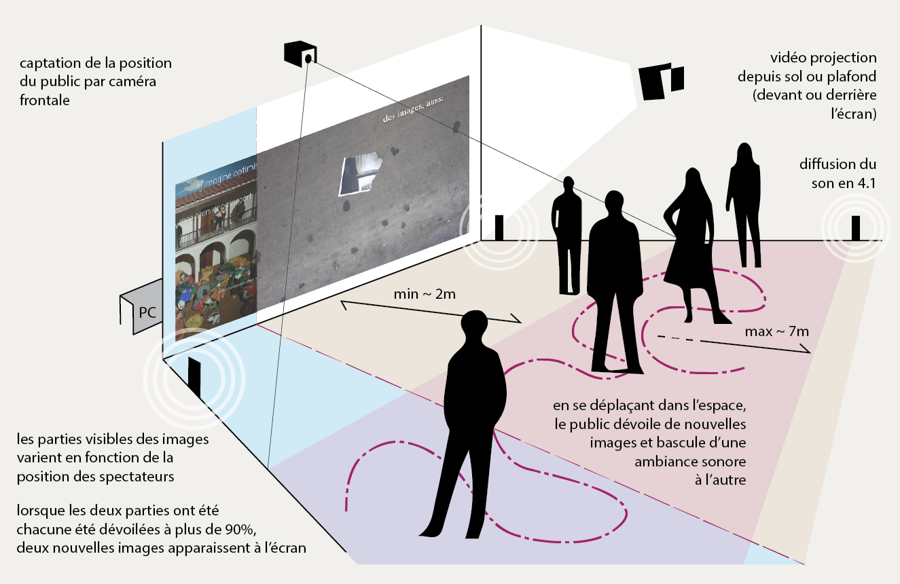

Atasco
Atasco est une installation qui nous permet d'entrer en communication avec les morts
Elle nous autorise à voir à travers les portes fermées, des yeux qui n'ont pas l'habitude de se faire voir.
Atasco est une installation qui nous permet d'entrer en communication avec les morts
Elle nous autorise à voir à travers les portes fermées, des yeux qui n'ont pas l'habitude de se faire voir.
